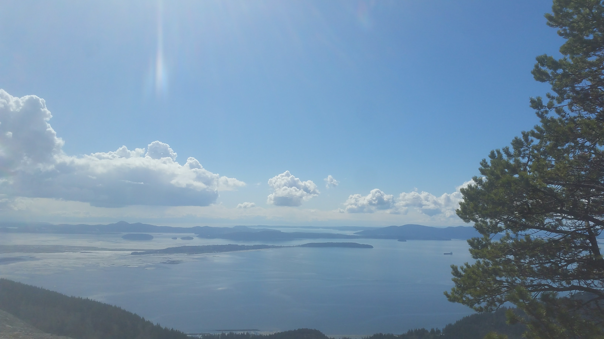
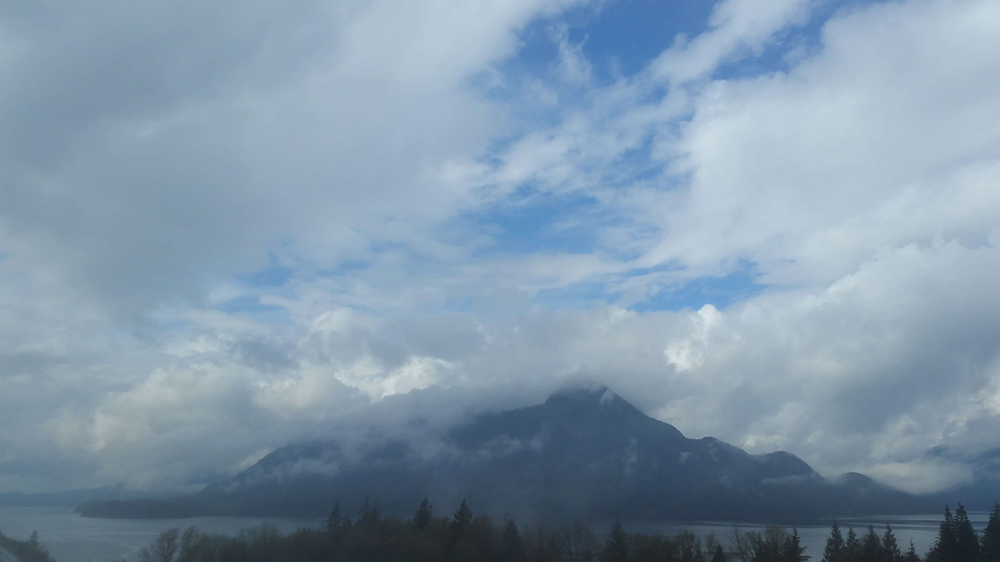
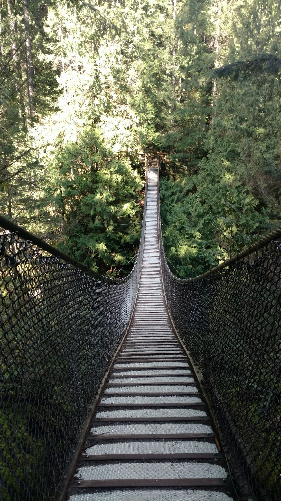

The tour-de-northwest continues, but now we find ourselves deep within the heart of British Columbia. The country is gorgeous, the people are incredibly nice, and we reek like homeless people (no Planet Fitnesses in this part of Canada means we haven't showered since the last blog post... yummy)
Hanging in the Bellingham, WA area, we found ourselves some local hiking spots with some beautiful views. We hiked the popular Oyster Dome trail - up the side of Mount Blanchard and overlooking the Samish Bay - and spent an afternoon high above what seemed like a thousand tiny oceans instead of one great bay. We watched a couple of parasailers taking off from the top of the mountain, in what seemed like suicidal leaps that went up instead of down...
View from the dome!
After that we did some laundry and grocery shopping, in preparation for our crossing into Canada. I also finally joined Club Moab (not the bomb...), and got myself some new hiking boots. Thanks momma!!! My old ones are basically destroyed, having seen their fair share of use on the trail, and I've heard lots of good things about Merrells. I also became an REI member! Cool.
Then we made the Pacific Crossing into Surrey, BC! The border had a decent queue, but after we crossed traffic was nothing until we made it to the outskirts of Vancouver. It was already late in the day, so we found ourselves a campsite north of the city, along the breathtaking Sea-to-Sky Highway.
View from our campsite. Not bad!
The next day was my birthday! It was a rainy day, but awesome nonetheless. We started by heading to the Capilano Valley Salmon Hatchery. Seems like a weird place to go, but it was actually very beautiful and super cool to see all the little fries and parrs (fancy words for juvenile salmonids!)

Little salmon fries!
The surrounding valley was also home to a very impressive dam, a beautiful lake, and a number of old-growth fir trees--one over 1500 years old! Trees are crazy, man. Afterwards we headed downtown to check out the Vancouver Art Gallery (they have a donation night every Tuesday!) and ran into a group of kids 'protesting' marijuana laws... but really they were just smoking weed in public all day. They smoked us up (a very pleasant surprise) and we headed into the gallery excited to view some art.
The gallery was host to some very cool exhibits. The main exhibit was for Musqueam Coast Salish (a First Nation local to the coastal BC area) sculptor, Susan Point. She utilized a variety of mediums - in particular, local red cedar - to make traditional Salish designs that looked like thousands of birds in flight, fish swimming, and much more. Salish art invokes tons of flowing, animalistic imagery that is just beautiful. I kept mentioning to Lacey that I'd love to have a Salish tattoo--if it wasn't heinous cultural appropriation.

"Beyond the Edge"
After the gallery we went to Earl's Test Kitchen for a birthday dinner! The food and beer was awesome. I had heard of the place before, but was very impressed by everything we got. It was a great meal, and from there we headed back to our lovely campsite with full bellies and big grins. A wonderful birthday, it was.
The next day met us with even more rain (we were pretty fed up at this point, but far from done with being perpetually damp), and we headed back downtown to try and see Dr. Sun Yat-Sen Classical Chinese Garden... but it was closed! Lame. So instead we walked around Chinatown for a little, checking out all the cute/weird/creepy Chinese markets and groceries and reading all the little blurbs about the history of Chinatown. Vancouver is an impressively diverse city (I've read it's the most diverse city in the word, but can't find that citation now), and it was cool to see the mix of cultures... it's a melting pot that should make the US envious.
On the contrary, we then walked a stretch of impoverished Vancouver that was SWARMING with homeless people. It was astounding, seeing so many people on the streets like that. Never mind the fact that they were shooting up heroin, snorting cocaine, and doing who-knows what else all in plain sight on the street. It was a bizarre but eye-opening experience. The homeless population of North America is much, much higher than I think most average people realize, and certainly greater than our governments are willing to acknowledge. It's very strange to witness, but we see it everywhere on our journeys. Cities, countryside, suburbs... homeless everywhere! Anyway, after that we took a long walk around Stanley Park, a lovely island park jutting out into the Vancouver Bay. Finally, we headed to Granville Street - we were told it was the main drag in Vancouver - and grabbed some pizza for dinner (it was so-so, definitely better than some American pizza I've had, but the crust had sesame seeds all over it?) before heading back to our campsite once more.

A lovely statue in the Vancouver Bay
The next day we headed to Lynn Canyon, similar to Capilano but without the salmon hatchery. But there was an awesome suspension bridge over a beautiful, rushing river rife with cascading waterfalls. Trade-offs, ya know? We hiked around the canyon, and nearby Rice Lake, and the sun even came out!!! We took advantage of the beautiful weather, and struck northward along the Sea-to-Sky Highway for the final time. We passed our campsite, and continued north all the way to Whistler (host of the 2010 Winter Olympics! lol), where we slept for the evening.
The Lynnwood Suspension Bridge

Rice Lake

View from the drive!
The next leg of our adventure is still in-progress, and I'm planning on writing a more dedicated post about it... but to summarize: we're taking a hot springs tour of British Columbia! We've found a slew of free, natural hot springs between Whistler and Banff (our final Canadian destination), and have made it our goal to stop at each one as we work our way across the province. We're currently 2 down, 3 to go! The first two hot springs were close to one another, within the Fraser Valley (southeast of Whistler, northeast of Vancouver), and getting to each was an adventure of its own.
As I said, I plan to write a post specifically about this portion of the adventure... but for now, we're having a 'civilization day' in Penticton, BC (after driving hours out of the wilderness) before we strike out on another long drive for our next hot spring! We expect to be in Banff in the next week or so.
Thanks for reading, stay tuned for more!!
Mileage: 17400
Weather: Gray, rainy, 62F
Currently listening to: Nicolas Jaar - Against All Logic